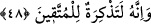
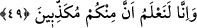

ifâde eder. Bu nedenle Türkçeye tercüme edilirken “hiç biriniz” şeklinde tercüme
edilmiştir. Nitekim Peygamber Efendimiz’in şu hadis-i şerifinde de olumsuzdan sonra
gelen kelime yine umum ve genellik ifâde eder: “Ganimetler siyah başlı, bizden başka
hiç kimseye helâl değildir.” [78]
Âyetteki “ahad” kelimesi mübtedâ olarak merfudur. “Min” zâide olup olumsuzluğu
pekiştirir. “Minkum” ise cümlenin haberidir. Buna göre âyetin mânâsı şöyle olur:
“Sizden hiçbir topluluk o katledilen kişiye veya onun katledilmesine ve helâk
edilmesine mâni olamazdı.” “Helâk edilme” mânâsını, “sonra da onun can damarını
koparırdık” âyetinin anlamından çıkarıyoruz. Bir başka ifâdeyle “hiç kimse o söz
uyduranın alakonulmasına ve kendisinden katlin savuşturulmasına engel olamazdı.” Bu
ifâde, Benî Temim araplarının Arapçalarına uygun olarak söylenmiş bir ifâdedir. Çünkü
Beni Temim “mâ”yı bilmezler.
Âyetteki “hâcizîn” kelimesi -Hicazlıların diline göre- “mâ”nın haberidir ve herhalde
en uygun cümle tahlili de bu olsa gerektir. Buna göre “mâ”, “leyse”ye benzeyen “mâ”
olmuş olur. “Min ahadin” lafzı “mâ”nın ismi, “hâcizîn” ise mansub olmak üzere
haberidir. “Minkum” kelimesi, zülhalinden önce gelen hâldir. Aslında bu kelime,
“ahadin” kelimesinin sıfatıdır.
Bu âyet-i kerîme bize işâret ediyor ki; Peygamber Efendimiz (s.a.), eğer kendi
nefsinden bir şey söyleyecek veya Allah ‘ın vahyettiklerine bir harf ekleyip ya da
eksiltecek olursa, Allah onu -katında insanların en değerlisi olduğu hâlde-
cezâlandıracaktır. Şu hâlde bâzı sapık fırkaların yaptıkları sapıklıklar gibi Allah’ın
kitabından herhangi bir şeyi değiştirmeye kalkan ya da kendi kafasından bir şey
söylemeye yeltenen kimselerin ne tür cezâ alacaklarını varın siz hesab edin.
48. Doğrusu o (Kur’an), takvâ sâhipleri için bir öğüttür.
“Şüphesiz o” Kur’an “takvâ sâhipleri için” şirkten ve dünya sevgisinden sakınanlar
için “bir öğüttür.” Çünkü müttakî kimse -müşrik olanın aksine- bu Kur’an’dan öğüt alır
ve ondan yararlanır. Dünyaya meyleden ve dünya sevgisi kendisine baskın gelen kimse
ise Kur’an’ı yalan sayar ve ondan yararlanmaz.
İbn Mes’ûd’un, “Kur’an’dan öğüt alınız” ifâdesi, “ona saygı gösteriniz”
anlamındadır.[79] Zira herhangi bir şeyden öğüt almanın, ona saygı göstermekle yakın
alâkası vardır.